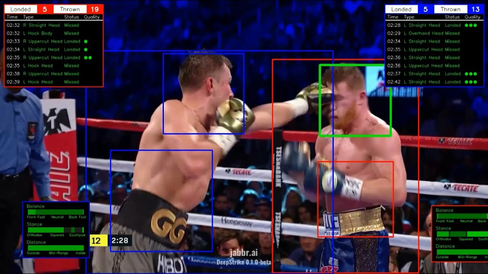

AutoVidProd: Revolutionizing Video Production

In the fast-paced world of combat sports, capturing every thrilling moment is crucial. AutoVidProd is at the forefront of this challenge, offering an innovative solution to video production. Born from a collaboration with the tech pioneers at Jabbr.ai, this software suite transforms the arduous task of video editing into a seamless, automated process.
By harnessing the power of Jabbr.ai's DeepStrike model, AutoVidProd intelligently navigates through hours of footage to present the most gripping angles and moments. Imagine a system that knows exactly when to switch camera views for maximum impact, creating a narrative that feels both dynamic and engaging. This isn't just an editing tool; it's a storyteller that highlights the peaks of adrenaline and the triumphs of athletes.
The result? Studio-quality productions that would normally require a team of editors, now accomplished at the click of a button. From pinpointing pivotal moments with 'Highlights Extraction' to applying dramatic overlays in real-time, AutoVidProd delivers a viewer experience that's as intense as the sport itself.
Behind the Scenes of Innovation
At the heart of AutoVidProd's magic is a blend of features designed to cater to every aspect of video production:
- Camera Angle Selection: The software's keen 'eye' selects the most impactful shot at any given moment, ensuring viewers are always in the center of action.
- Highlights Extraction: Like a seasoned editor, it sifts through content to showcase the climactic punches and strategic plays that define a match.
- ROI Tracking: Keeping focus on where the action is, providing a seamless viewing experience.
- Overlay Application: Enhances the storytelling by adding informative and visually appealing graphics during key moments.
- Customizable Configuration: Gives the creators flexibility to adapt the output to their vision.
- Multi-Camera Support: Integrates multiple perspectives to give a comprehensive portrayal of the event.
These features come together to create a product that's not only technologically advanced but also intuitive and accessible for producers of all skill levels.
Watch the Demo
The side-by-side videos above demonstrate the comparison between the original camera streams and the enhanced output from AutoVidProd.
Video Synchronization Based on Feature Trajectories
This repository contains an implementation of a video synchronization algorithm based on feature trajectories, as described in the paper Feature-Based Multi-Video Synchronization with Subframe Accuracy, A. Elhayek et al. The algorithm aims to synchronize multiple videos by extracting features, constructing trajectories, and matching these trajectories across videos.
Synchronizing videos is a crucial task in many multimedia applications ranging from film production to sports broadcasting. Traditional methods often rely on timestamps or manual alignment, which can be error-prone or time-consuming. This implementation offers an automated approach by leveraging the power of computer vision techniques. By extracting features from video frames and constructing trajectories, the algorithm can determine the synchronization parameters that align videos in time.

Action Recognition in Videos
This script identifies the start and end of a round in boxing video footage.
Key Features:
- Video Processing: Load a video and process it frame by frame.
- Action Recognition: Utilizes the R(2+1)D-18 model, a 3D ResNet model pretrained on the Kinetics-400 dataset.
- Frame Transformation: Applies image transformations (resize, center crop, and normalization) using the
albumentationslibrary. - Output Video: Generates an output video with frames labeled with the detected action.